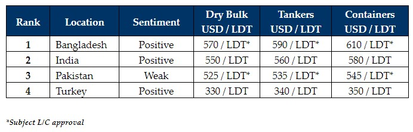

inWeekly Demolition Reports28/02/2023

It is the Bangladeshi market that has been impressing everybody of late (and for yet another week) with a lot of pent-up demand being realized andeven news of some choice purchases at decent numbers on units that have managed to receive L/C approvals.
Indeed, we have once again seen levels over USD 600/LDT in Bangladesh for the first time since the same time last year, and competing markets are increasingly struggling to keep up.
India has been trying its best too and has managed to secure a number of HKC green sales this year, but there is no competing with a rampant Chattogram market when they start to fire up, and it is now a case of ensuring L/Cs are in order before committing vessels at decent levels once again.
Of course, not every buyer is able to secure the requisite financing to open L/Cs, especially those that have to go through government/ state banks and are not able to transact government-controlled U.S. Dollar reserves on vessels for recycling.
Therefore, through private financing channels or with usance L/Cs, end buyers in Bangladesh are finding ways to secure much needed tonnage, with yards having virtually emptied over the last 6 – 8 months as the current L/C crisis rumbles on and markets declined from the peaks of over USD 700/LDT seen last year.
Pakistan regrettably remains sidelined for yet another week, neither competitive on price nor are local buyers able to come up with appropriate L/C financing to import vessels for the time being, resulting in a port report that has not welcomed any fresh tonnage for the last two weeks.
Finally, the Turkish market continues to firm up as both import and steel plate prices registered improvements this week, vessel prices climb another USD 20/Ton, and private sales have reportedly registered into this market.
For week 8 of 2023, GMS demo rankings / pricing for the week are as below.

📄 Download PDF: Ship-recycling-market-insight-week-08-2023-Impressing.pdfSource: GMS,Inc. ,https://www.gmsinc.net/gms_new/index.php/web